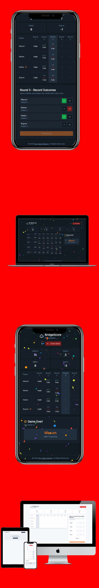

Baymax digital health care Assistant

Typography
Project Details
Baymax is a digital healthcare assistant designed for offline AI-powered medical support. Developed for the Kaggle Google competition, Baymax leverages advanced machine learning models to provide health recommendations, symptom analysis, and emergency guidance without requiring internet connectivity. The project involved model fine-tuning, integration with MCP Server, and a focus on privacy and accessibility for remote users.
Words by the client
Our clients are more than just customers, they are partners. We've built lasting relationships that drive success for all.